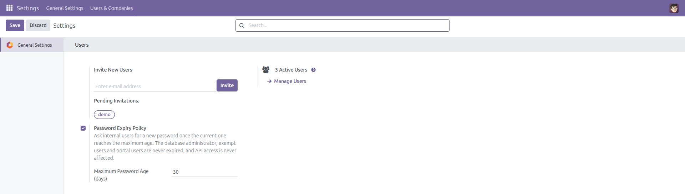
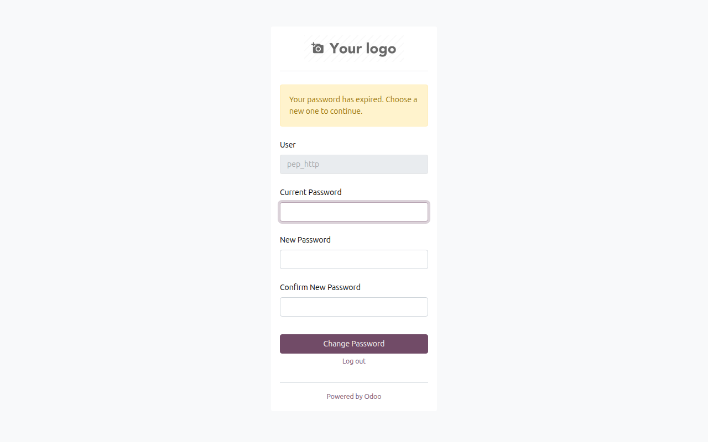
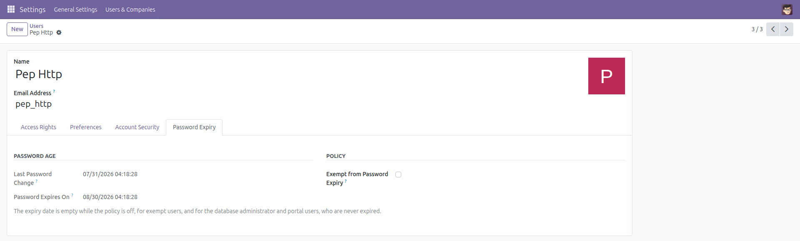

Password Expiry Policy
Passwords that rotate on a schedule your auditor can sign off.
ISO 27001, SOC 2 and most internal security policies ask for a maximum password age. Odoo records no password age at all and has no rotation rule, so there is nothing to show an auditor and nothing to enforce.
This module stores the date of every password change on the user, and once the configured period has passed it sends the user to a change-password page before letting them back into the backend.
Free and open source (LGPL-3), Odoo 14.0 through 19.0.
- Ships disabled — nothing changes until an administrator switches it on and saves.
- A typo cannot lock out the company — the period is clamped to a minimum of 7 days when you save it and when it is read.
- Never locks out the administrator — the database superuser (OdooBot, uid 1) and the
base.user_admin account are always exempt, and you can flag any other user as exempt.
- Portal and public users are never expired — the policy applies to internal backend users only.
- Your integrations keep working — XML-RPC and JSON-RPC authentication and calls,
/web/session/*, assets, downloads, scheduled jobs, the mail gateway and database initialisation are never intercepted.
- No dead ends — the login page, the logout endpoint, the database manager and the change-password page itself always stay reachable, so an expired user can never be caught in a redirect loop.
- Installing it expires nobody — every existing user is stamped with the installation date, never with a date in the past.
- The session survives the change — after choosing a new password the user goes straight back to work, with no forced re-login.
Screenshots

Settings → General Settings → Users: switch the policy on and set the maximum password age.

A user whose password has aged out is sent here on the next page load. Logging out is always one click away.

Every user gets a Password Expiry tab: when the password was last changed, when it expires, and a per-user exemption flag.
Installation
- Open Apps, search for Password Expiry Policy and click Install.
- Only the standard
base_setup and web modules are required.
- Installation stamps every existing user with the current date and time. The policy is off until you enable it, so nothing changes yet.
Configuration
- Go to Settings → General Settings and find the Users block.
- Tick Password Expiry Policy.
- Set Maximum Password Age (days) — 90 by default. Anything below 7 is raised to 7, and the ceiling is 3650.
- Click Save.
- Optional: open Settings → Users & Companies → Users, pick an integration or break-glass account, open the Password Expiry tab and tick Exempt from Password Expiry.
Usage
- Each user's Password Expiry tab shows the last password change and the resulting expiry date.
- When the expiry date passes, the user's next backend page load lands on the change-password page instead.
- The user enters their current password and a new one. The clock resets and they continue straight into the backend.
- An administrator can always reset a password the usual way (Users form → Change Password); that also resets the clock.
What this module deliberately does not do
- It does not block API access. XML-RPC and JSON-RPC keep authenticating and answering for an expired user — on purpose, so that a rotation policy can never take your integrations down. The redirect only applies to browser page loads (a GET that asks for HTML).
- A backend tab that is already open keeps working from its background requests until the next page load or refresh, when the redirect kicks in.
- It does not enforce password complexity, a password history, or a reuse ban — only maximum age. It checks that the new password differs from the current one and that the confirmation matches; everything else is left to Odoo.
- It does not send reminder emails before expiry.
- Users with no recorded password change date (an edge case the installation stamp normally prevents) are never expired — the check deliberately fails open rather than locking anybody out.
Version notes
Identical behaviour on every supported series (14.0 – 19.0). Each series is installed, upgraded and functionally tested before release.
License: LGPL-3 · Source on GitHub · Issues and contributions welcome.